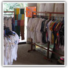

Casa Chiapas, es un instituto que busca impulsar el desarrollo de las artesanías en los municipios indígenas y rurales de Chiapas.
Los artesanos de Chiapas, hacen el esfuerzo por mantener en vida las costumbres, es por eso que dan a conocer a todo el mundo dentro de este instituto casa Chiapas, productos que representan siglos de historia, conocimientos y costumbres. Dentro de las artesanías que existen en el estado de Chiapas se tiene; la Alfarería, Ámbar, Cestería, Comestibles, Juguetería, Laca, Metalistería, Talla de Madera, Talabartería y textil.
Horario de atención 9:00 am a 9:00 pm.
Teléfono: 01 (916) 345 2855
6.5 kilómetros carretera a la zona Arqueológica
A un costado del Museo del sitio. Tomando la carretera que conduce a la Zona Arqueológica km 6.5.
Tomará la 2ª salida hacia Palenque-Ocosingo/México 199 y así siga en esa dirección hacia Las Ruinas antes de llegar a la Zona Arqueológica se encontrara con el Museo y junto La Casa Chiapas.
Usted podrá adquirir diferentes artesanías de las diferentes regiones del estado de Chiapas, admirar todo un sinfín de artículos en exposición dentro de Casa Chiapas. Podra adquirir articulos de la zona de Palenque.

posicione el mouse sobre las imágenes